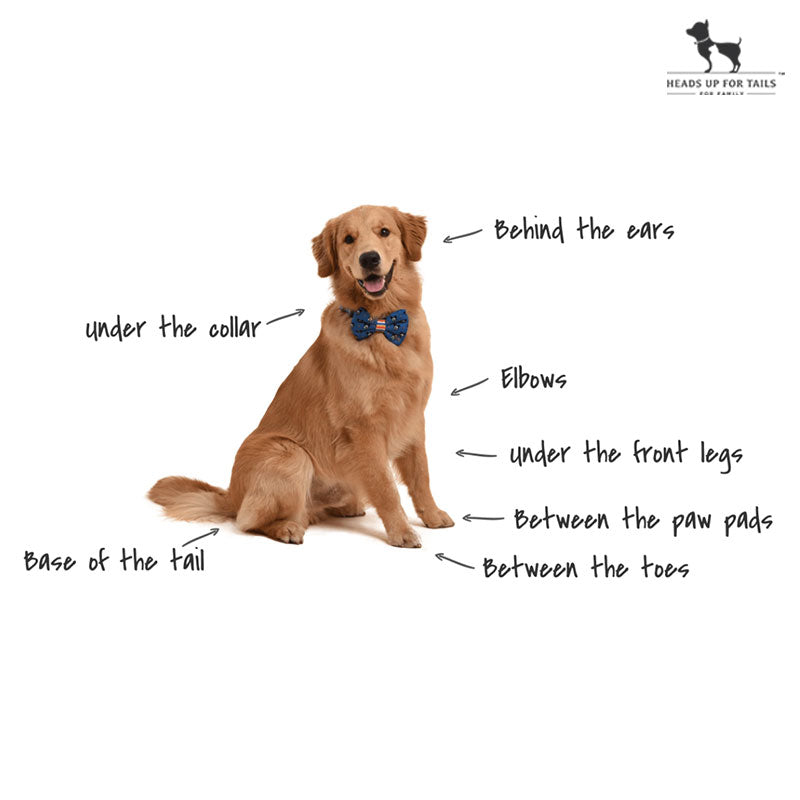

Ticks and fleas are the creepy crawly monsters that feature in most pet parents' nightmares. The mere sight of one of these bloodthirsty insects latched onto your pet's skin is enough to cause a shiver to run down your spine. But what are they really and why should we as pet parents care about them?
Ticks and fleas are two different types of parasites that commonly infect both cats and dogs. They both bite and suck blood from their hosts and transmit diseases. The good news? There are ways to get rid of these tick insect infestations and easy preventative measures that can reduce the chance of a re-infestation!
Here's a little bit more about them both:
Ticks look a lot like very small spiders. Once they latch onto your pet they feed off your pet's blood.
There are hundreds of different species of ticks that can transmit diseases like Lyme disease and tick-borne relapsing fever to your dog. There are also some specific ticks that can pass on tick borne encephalitis.
They are blackish-brown specks, smaller than ticks and they jump very quickly and high. To test if your dog has fleas, place the flea dirt on a wet kitchen tissue and you'll see it leaving red stains.
Fleas are another type of parasite that also freely roam in a number of different variants. Although they are not commonly as lethal as ticks, they can pass on tapeworm and typhus.
During the initial stages of the infestation, it might not be so obvious to spot these pests. These are the signs you should be on the lookout for through the year:
If you spot any of the above signs, you should immediately check your dog thoroughly for ticks or other parasites. While fleas jump from one spot to another, ticks tend to stick to one place. Here are few of their favourite spots you'll find them hiding in:
